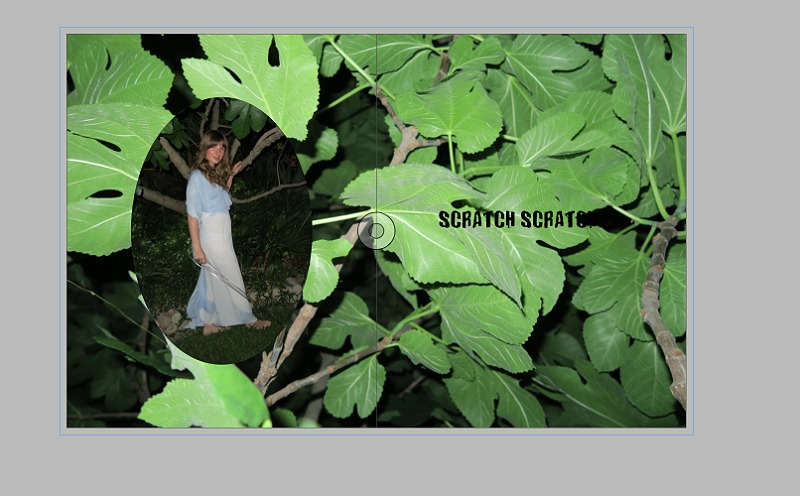
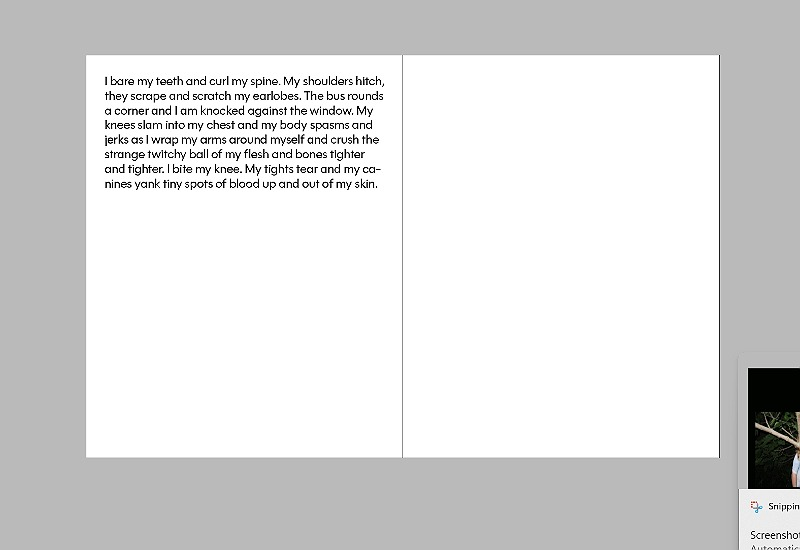
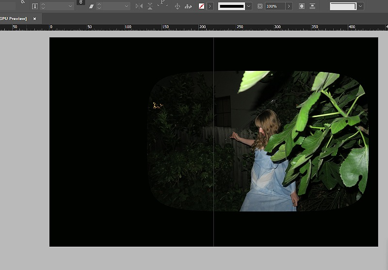

The print element of my final outcome is a large format picture/photography book printed on 120gsm matte paper and perfect bound. The cover is made from 3mm mdf and covered in fake grass. The grids, margins and type specifications can be seen in the images. When putting together this book, I knew that I wanted to use a large font size and some kind of decorative border elements. The process for putting everything together was pretty straight forward, and again, I let the grids and rules that I had put in place for myself, in combination with the photos themselves to inform the way that everything was laid out. The book is separated into three sections that correspond to emotional beats in the story (ie. call to action + leave home, cross the threshold, return changed - the monomyth) and also the three dresses and settings.



